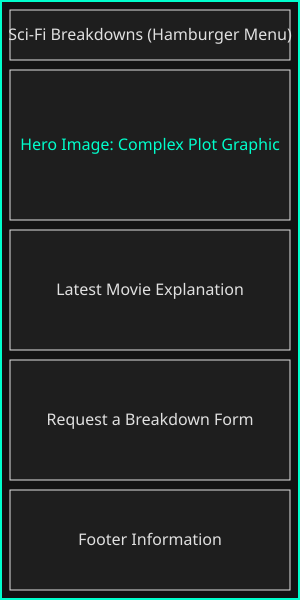
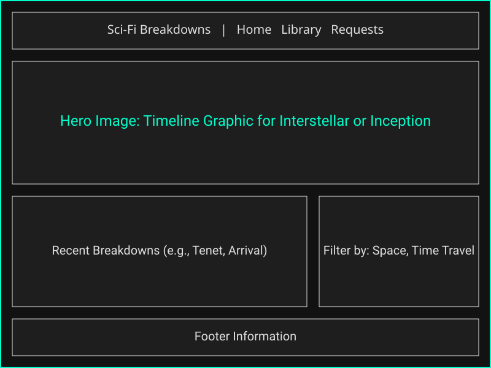

Site Name
Name: Sci-Fi Cinematic Breakdowns
Reason: This name directly communicates the exact niche of the website to the user. It represents a hub focused on analyzing and demystifying complex science fiction films.
Optional domain availability: scifibreakdowns.com
Site Purpose
The site provides a hub for science fiction fans by offering detailed explanations of complex movie plots, timelines, and scientific concepts. It will feature a library of breakdowns and a form for users to request new movies to be explained.
Scenarios
Questions our target audience will ask when visiting the site:
- What is the actual timeline of events in the movie Tenet?
- Where can I submit a request for the site to explain the ending of Arrival?
- How can I easily filter the movie library to only see space exploration films?
Color Schema
The following colors are utilized on this site plan and will be used on the final website:
- Primary Background (#121212): Deep cinematic black used for the main body background to create a theater-like viewing experience.
- Secondary Background (#1E1E1E): Dark grey used for movie cards and form backgrounds to create contrast.
- Text Color (#E0E0E0): Soft white used for all body paragraphs to ensure high readability against the dark background.
- Accent Color (#00FFCC): Neon cyan used for headings, links, and buttons to provide a futuristic, sci-fi aesthetic.
Typography
-
Headings (Orbitron):
Used for
h1,h2, andh3tags. This font gives a blocky, futuristic feel appropriate for the genre. - Body Text (Roboto): Used for all <p>, <li>, and form inputs. It is a clean sans-serif font that makes long paragraphs of explanatory text easy to read.
Wireframes
Below are the planned mobile and desktop layouts for the Home Page and Library.
Mobile View (Portrait)

Desktop View (Landscape)
